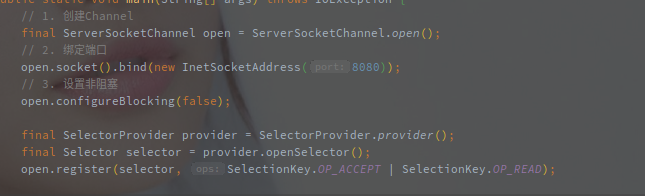

NIO服务端启动流程
本文主要介绍Netty NIO服务端的启动流程。
会忽略一些异常以及一些中间代码，主要希望总结整个启动的步骤和流程。
[TOC]
概述
Netty 是对 JDK NIO 的进一步封装和扩展，所以Netty服务端的启动流程是基本保持Nio的模式不变，两者可以相互对照来看。
以下是原生的Nio服务端启动代码(最最简单的版本):

总体步骤可以分为以下几步：
- 创建并配置服务端Channel
- 绑定端口
- 创建Selector
- 将Channel注册到Selector
在EventLoopGroup的初始化流程中，创建EventLoop的过程就会通过SelectorProvider生成一个Selector，相当于提前生成了Selector，所以剩下的就是Channel的创建，初始化以及注册。
源码分析
以下是整体的Netty Nio服务端启动流程:

整个启动流程可以简单分为以下两步:
- 初始化Bootstrap
- 绑定端口
初始化Bootstrap
Bootstrap是Netty中的引导类，可以帮助用户快速配置并拉起一个服务。

以下是一些常用的配置方法:
- group - 配置工作线程池
该方法传入至少一个EventLoopGroup用于处理Channel上的IO事件。
一般来说，第一个用于响应请求，建立连接，可以采用单线程方式，第二个用于处理子Channel的IO事件，当然也可以只指定一个EventLoopGroup用于所有IO事件。
EventLoop在创建的时候就会通过SelectorProvider创建一个Selector对象。
- channel - 配置服务端Channel类型
该方法的作用是指定服务端本地Channel的类型，利用该方法可以很方便的切换UDP和TCP协议。
例如将NioServerSocketChannel替换为NioDatagramChannel，就可以从TCP服务端转化为UDP服务端。
- option - 服务端Channel的配置项
该方法用于配置TCP的基本参数。
例如图中的SO_BACKLOG，就是配置TCP的半连接队列长度，另外的还有SO_KEEPLIVE，SO_SNDBUF等配置参数。
- childHandler - 配置针对子Channel的业务逻辑
该方法用与指定ChannelPipeline中前后的业务逻辑。
因为不能多次调用，所以如果需要配置多个ChannelHandler，就需要拼装成一个ChannelInitializer来实现。
ServerBootstrap相当于一个启动器，可以通过简单的配置启动一个可用的TCP服务端。
Option中包含了很多TCP的底层参数，包括KEEPALIVE之类的，能起到非常关键的作用。
在addLast中有一个可选参数，可以选择与一个EventLoopGroup，这个就相当于业务逻辑的线程池，区别于Accept和IO线程池。
绑定端口

说是绑定端口，但是该方法中包含了Channel的创建和初始化以及注册的逻辑。Bootstrap的bind方法在经过简单的验证之后就会调用到AbstractBootstrap的doBind方法，具体的源码如下：

接下来细致的看一下流程代码。
1. Channel的创建
在initAndRegister中，首先就对ServerSocketChannel进行了创建。
final ChannelFuture initAndRegister() {
Channel channel = null;
try {
// 创建新的Channel,根据ChannelFactory不同获取不同的Channel
// channelFactory就是通过Bootstrap创建时的channel设置的
channel = channelFactory.newChannel();
...
通过ChannelFactory.newChannel创建了服务端的SocketChannel，这里的ChannelFactory就是在ServerBootStrap创建过程中定义的。

如上，最终生成了ReflectiveChannelFactory的工厂类。
另外channel方法中的参数Class也指定了服务端Channel的具体类型，再通过ChannelFactory反射生成，所以说在Netty中TCP和UDP的协议转换非常简单。
以下是ReflectiveChannelFactory的工厂方法:

接下来还有NioServerSocketChannel的初始化流程，通过反射调用后了对应的构造函数，以下就是NioServerSocketChannel的无参构造。

最主要的就是通过SelectorProvider创建了Channel对象，之后再以Channel为参进一步调用构造函数。

这里值得注意的是初始化参数中带上了SelectionKey.OP_ACCEPT，以下是AbstractNioChannel的构造函数。

这里将NioServerSocketChannel中传入的SelectionKey.OP_ACCEPT赋值给了readInterestOp。
readInterestOp就表示Channel的读事件，表明是是Channel需要专注的事件。
NioServerSocketChannel负责接收客户端连接，而不是一些IO事件的处理，所以此处传的是Accept，如果是ServerSocketChannel就变成了SelectionKet.OP_READ。
还有一个重点就是，在这里将channel设定为了非阻塞模式！！！
阻塞模式下的Channel在accept之后会阻塞等待客户端的连接，明显不符合Netty异步事件驱动网络框架的定位。
1.2 对于服务端Channel创建的总结
Channel类型在Bootstrap的channel方法中指定
在创建ServerBootStrap的时候指定的channel，会以此Class对象为参数，创建一个ChannlFactory对象，以此创建服务端的Channel。
NioServerSocketChannel创建之初就是非阻塞的，并且已经指定了对应的读事件
2. Channel的初始化
服务端Channel(NioServerSocketChannel)创建完成之后的初始化。

初始化一共涉及以下的流程:
- 配置ChannelOptions
- 配置Attributes
- 添加服务端Channel的ChannelHandler
重点在第3步，首先是从Bootstrap中捞出配置的Handler，之后还会增加了一个ServerBootstrapAcceptor的Handler。
这个ServerBootstrapAcceptor非常关键，它用于响应OS_ACCEPT方法，并创建Channel，以及注册到对应的WorkerGroup中。
到目前位置都是同步执行的，Channel也咩有绑定到某个EventLoop上进行监听。
之前创建的EventLoop也咩有启动。
至此ServerSocketChannel已经初始化完成，再来就是注册流程了，将生成的Channel注册到EventLoopGroup中
3. Channel的注册
这里说的注册到EventLoopGroup是指从中挑一个EventLoop注册，将创建好的ServerSocketChannel绑定在EventLoop的Seletcor上。
以下是#register()的源码

next()方法就是从EventLoopGroup管理的EventLoop中选一个，具体的选择逻辑在EventExecutorChooser中实现。
返回值是ChannelFutures类型就表明Channel的注册流程是异步的。
最终register会调用到AbstractChannel$AbstractUnsafe#register(EventLoop,ChannelPromise)

这个方法整个的重点就是进一步调用register0方法，但是有意思的是它调用前的判断。
Callback pending如果当前线程为EventLoop就直接调用，否则通过EventLoop执行最终的注册流程，这里就体现了Netty的一个执行原则：Channel相关的事件都由Channel绑定的EventLoop执行。
注意这里是服务端启动以来第一次调用EventLoop.execute方法。
首次调用该方法会调用doStartThread方法，开启EventLoop的轮询流程，执行run方法的逻辑。
相当于EventLoop中的线程也是懒(延迟)启动。
再来看register0方法：

doRegister()方法是个模板方法，真实的注册逻辑会延迟到子类实现。
以下是doRegister()方法在AbstractNioChannel的实现:

这里的注册就是将Channel注册到Selector上，参数0表示此时并不会关注Channel上任何的事件。
这里有一个细节，就是注册的时候会带上当前对象(NioServerSocketChannel)作为attribute。
即之后可以通过channel.get()方法获取到NioServerSocketChannel对象。
注册成功之后调用了DefaultChannelPipline#invokeHandlerAddedIfNeeded方法，该方法用于拼装Pipeline的整个业务链表。
方法的作用就是在首次注册的时候完成Pipeline的拼装，也就是调用延迟的handlerAdded方法。
这里必须要先完成组装的原因是因为后面就要触发ChannelRegistered事件了，可能需要调用到内嵌的ChannelHandler的逻辑。
之后是设置Promise为成功，并触发ChannelRegistered事件。
如果首次注册还会额外触发ChannelActive事，如果不是首次触发，并且配置中开启了AutoRead选项(ChannelIOption.AUTO_READ)，则直接调用beginRead()方法，开始接受请求。
beginRead方法会一步步调用到AbstractNioChannel的doBeginRead方法:

该方法就是为注册到Selector的SelectionKey增加readInterestOp的值。
readInterestOp是构造函数中传入的从NioServerSocketChannel的构造函数中指定的SelectionKey.OP_ACCEPT。
以上就完成了Channel的整个创建，初始化并注册流程，逻辑不复杂，但是调用的链路真的多。
返回的一个ChannelFuture实际就是为了传递Channel。
4. 真实端口绑定
Channel创建之后就需要绑定本地的端口。
bind事件在Netty中被定义为出站事件，相关API在ChannelOutboundInvoker定义。
以下是doBind0()方法的源码:

会调用Channel绑定的EventLoop来执行绑定的事件，经过AbstractChannel#bind() -> DefaultChannelPipeline#bind() -> AbstractChannelHandlerContext#bind()的调用链。
以下是AbstractChannelHandlerContext中的bind方法，也是bind事件的响应处理方法:

findContextOutbound方法就是找到下一个含有bind方法的AbstractChannelHandlerContext。
简单提一句，ChannelHandler最终会被包装成HandlerContext存放在Pipeline的双向链表中，通过掩码MASK的方式确定各自实现的方法。
在这里，整个事件从TailContext传递到HeadContext，并在HeadContext完成最终的绑定，此时如果我们有自定义的outbountHandler完全可以将bind事件拦截下来。
以下是HeadContext的bind方法源码:

不出意外的是还是借用unsafe完成相对比较底层的操作，以下是AbstractChannel$AbstractUnsafe的bind方法:

源码中的doBind方法是个模板方法延迟到了子类实现，最终Channel的子类自然是NioServerSocketChannel。

也就是根据JDK的版本选择不同的绑定方式，到此就完成了端口的绑定。
总结
端口绑定流程，在ServerBootstrap初始化完毕之后，ServerBootstrap如何快速建立起服务

整个服务端的启动流程步骤如下:
创建对应的EventLoopGroup
EventLoopGroup会自行去创建EventLoop，对于每个创建的EventLoop都会创建各自的Selector。
此时EventLoop对应的线程并未开启，对Selector的轮询也并未开始，但各自的线程都已经准备好了。
默认的EventLoopGroup会创建两倍CPU个数的线程。
初始化Bootstrap
指定两个EventLoopGroup，ChannelOption，ChannelHandler等服务端配置。
创建Channel
Channel是根据Bootstrap中的配置，通过反射创建的，创建之后就会设置为非阻塞模式
初始化Channel
包括ChannelOption的配置，以及父子Channel的Handler配置。
注册Channel
这里的注册是指注册到EventLoop绑定的Selector中，并触发ChannelRegistered事件。
注册的事件，EventLoopGroup会选择一个EventLoop并调用EventLoop的executor方法，首次调用executor方法也就开启了对Selector的轮询。
绑定本地端口
绑定完本地端口成了最后的事情，绑定成功之后就可以监听对应端口的事件。
注意一个点，在服务注册之前对应的线程池EventLoopGroup是没有启动的。
在第一次执行executor方法之后线程才被启动。